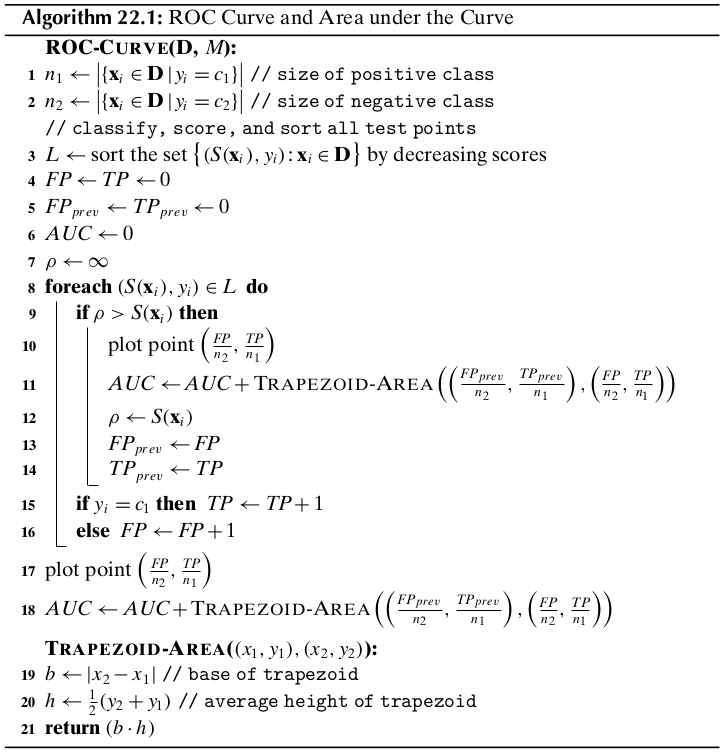
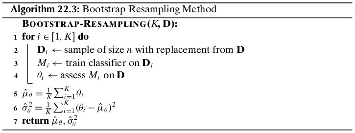
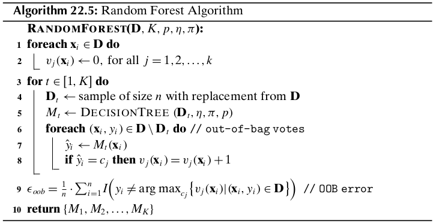
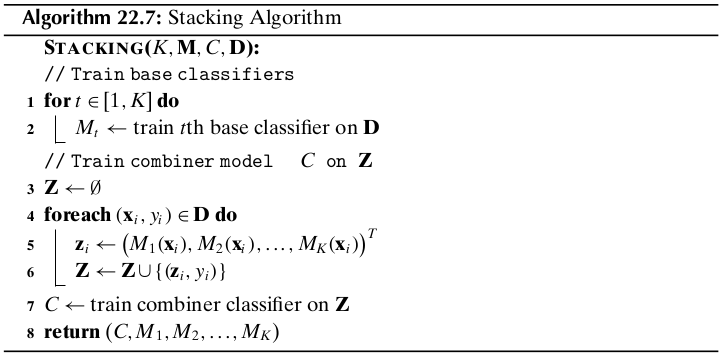

Chapter 22 Classification Assessment¶
We may think of the classifier as a model or function \(M\) that predicts the class label \(\hat{y}\) for a given input example \(\x\):
where \(\x=(x_1,x_2,\cds,x_d)^T\in\R^d\) is a point in \(d\)-dimensional space and \(\hat{y}=\{c_1,c_2,\cds,c_k\}\) is its predicted class.
To build the classification model \(M\) we need a training set of points along with their known classes. Different classifiers are obtained depending on the assumptions used to build the model \(M\). Once the model \(M\) has been trained, we assess its performance over a separate testing set of points for which we know the true classes. Finally, the model can be deployed to predict the class for future points whose class we typically do not know.
22.1 Classification Performance Measures¶
Let \(\D\) be the testing set comprising \(n\) points in a \(d\) dimensional space, let \(\{c_1,c_2,\cds,c_k\}\) denote the set of \(k\) class labels, and let \(M\) be a classifier. For \(\x_i\in\D\), let \(y_i\) denote its true class, and let \(\hat{y_i}=M(\x_i)\) denote its predicted class.
Error Rate
Note
\(\dp Error\ Rate=\frac{1}{n}\sum_{i=1}^nI(y_i\ne\hat{y_i})\)
Accuracy
Note
\(\dp Accuracy=\frac{1}{n}\sum_{i=1}^nI(y_i=\hat{y_i})=1-Error\ Rate\)
22.1.1 Contingency Table-based Measures¶
Let \(\cl{D}=\{\D_1,\D_2,\cds,\D_k\}\) denote a partitioning of the testing points based on their true class labels, where
Let \(\cl{R}=\{\bs{\rm{R}}_1,\bs{\rm{R}}_2,\cds,\bs{\rm{R}}_k\}\) denote a partitioning of the testing points based on the predicted labels, that is,
The partitionings \(\cl{R}\) and \(\cl{D}\) induce a \(k\times k\) contingency table \(\N\), also called a confusion matrix, defined as follows:
where \(1\leq i,j\leq k\).
Accuracy/Precision
Note
\(\dp acc_i=prec_i=\frac{n_{ii}}{m_i}\)
where \(m_i\) is the number of examples predicted as \(c_i\) by classifier \(M\). The higher the accuracy on class \(c_i\) the better the classifier.
Note
\(\dp Accuracy=Precision=\sum_{i=1}^k\bigg(\frac{m_i}{n}\bigg)acc_i=\frac{1}{n}\sum_{i=1}^kn_{ii}\)
Coverage/Recall
Note
\(\dp coverage_i=recall_i=\frac{n_{ii}}{n_i}\)
where \(n_i\) is the number of points in class \(c_i\). The higher the coverage the better the classifier.
F-measure
Note
\(\dp F_i=\frac{2}{\frac{1}{prec_i}+\frac{1}{recall_i}}=\frac{2\cd prec_i\cd recall_i}{prec_i+recall_i}\) \(\dp=\frac{2n_{ii}}{n_i+m_i}\)
The higher the \(F_i\) value the better the classifier.
Note
\(\dp F=\frac{1}{k}\sum_{i=1}^rF_i\)
For a perfect classifier, the maximum value of the F-measure is 1.
22.1.2 Binary Classification: Positive and Negative Class¶
When there are only \(k=2\) classes, we call class \(c_i\) the positive class and \(c_2\) the negative class.
True Positives (TP)
False Positives (FP)
False Negatives (FN)
True Negatives (TN)
Error Rate
Note
\(\dp Error\ Rate=\frac{FP+FN}{n}\)
Accuracy
Note
\(\dp Accuracy=\frac{TP+TN}{n}\)
Class-specific Precision
Note
\(\dp prec_P=\frac{TP}{TP+FP}=\frac{TP}{m_1}\)
\(\dp prec_N=\frac{TN}{TN+FN}=\frac{TN}{m_2}\)
where \(m_i=|\bs{\rm{R}}_i|\) is the number of points predicted by \(M\) as having class \(c_i\).
Sensitivity: True Positive Rate
Note
\(\dp TPR=recall_P=\frac{TP}{TP+FN}=\frac{TP}{n_1}\)
where \(n_1\) is the size of the positive class.
Specificity: True Negative Rate
Note
\(\dp TNR=specificity=recall_N=\frac{TN}{FP+TN}=\frac{TN}{n_2}\)
where \(n_2\) is the size of the negative class.
False Negative Rate
Note
\(FNR=\frac{FN}{TP+FN}=\frac{FN}{n_1}=1-sensitivity\)
False Positive Rate
Note
\(FPR=\frac{FP}{FP+TN}=\frac{FP}{n_2}=1-specificity\)
22.1.3 ROC Analysis¶
Receiver Operating Characteristic (ROC) analysis is a popular strategy for assessing the performance of classifiers when there are two classes.
Typically, a binary calssifier chooses some positive score threshold \(\rho\), and classifies all points with score above \(\rho\) as positive, with the remaining points classified as negative. ROC analysis plots the performance of the classifier over all possible values of the threshold parameter \(\rho\). In particular, for each value of \(\rho\), it plots the false positive rate on the \(x\)-axis versus the true positive rate on the \(y\)-axis. The resulting plot is called the ROC curve or ROC plot for the classifier.
Let \(S(\x_i)\) denote the real-valued score for the positive class output by a classifier \(M\) for the point \(\x_i\). Let the maximum and minimum score thresholds observed on testing dataset \(\D\) be as follows:
Initially, we classify all points as negative. Both TP and FP are thus initially zero, resulting in TPR and FPR rates of zero, which correspond to the point (0,0) at the lower left corner in the ROC plot. Next for each distinct value of \(\rho\) in the range \([\rho^\min,\rho^\max]\), we tabulate the set of positive points:
and we compute the corresponding true and false positive rates, to obtain a new point in the ROC plot. Finally, in the last step, we classify all points as positive. Both FN and TN are thus zero, resulting in TPR and FPR values of 1. This results in the point (1,1) at the top right-hand corner in the ROC plot. An ideal classifier corresponds to the top left point (0,1), which correspoinds to the case \(FPR=0\) and \(TPR=1\), that is, the classifier has no false positives, and identifies all true positives.
As such, a ROC curve indicates the extent to which the classifier ranks positive instances higher than the negative instances. An ideal classifier should score all positive points higher than any negative point. Thus, a classifier with a curve closer to the ideal case, that is, closer to the upper left corner, is a better classifier.
Area Under ROC Curve
Because the total area of the plot is 1, the AUC lies in the interval \([0,1]\) - the higher the better. The AUC value is essentially the probability that the classifier will rank a random positive test case higher than a random negative test instance.
ROC/AUC Algorithm
Random Classifier
A random classifier corresponds to a diagonal line in the ROC plot. It follows that if the ROC curve for any classifier is below the diagonal, it indicates performance worse than random guessing. For such cases, inverting the class assignment will produce a better classifier.
Class Imbalance
It is worth remarking that ROC curves are insensitive to class skew. This is because the TPR, interpreted a s the probability of predicting a positive point as positive, and the FPR, interpreted as the probability of predicting a negative point as positive, do not depend on the ratio of the positive to negative class size.
22.2 Classifier Evaluation¶
The input dataset \(\D\) is randomly split into a disjoint training set and testing set. The training set is used to learn the model \(M\), and the testing set is used to evaluate the measure \(\theta\).
22.2.1 \(K\)-fold Cross-Validation¶
Cross-validation divides the dataset \(\D\) into \(K\) equal-sized parts, called folds, namely \(\D_1,\D_2,\cds,\D_k\). Each fold \(\D_i\) is, in turn, treated as the testing set, with the remaining folds comprising the training set \(\D\backslash\D_i=\bigcup_{j\ne i}\D_j\). After training the model \(M_i\) on \(\D\backslash\D_i\), we assess its performance on the testing set \(\D_i\) to obtain the \(i\)th estimate \(\th_i\). The expected value of the performance measure can then be estimated as
and its variance as
Usually \(K\) is chosen to be 5 or 10. The special case, when \(K=n\), is called leave-one-out cross-validation, where the tseting set comprises a single point and the remaining data is used for training purposes.
22.2.2 Bootstrap Resampling¶
The bootstrap method draws \(K\) random samples of size \(n\) with replacement from \(\D\). Each sample \(\D_i\) is thus the same size as \(\D\), and has several repeated points. The probability that a point is selected is given as \(p=\frac{1}{n}\), and thus the probability that it is not selected is
Because \(\D_i\) has \(n\) points, the probability that \(\x_j\) is not selected even after \(n\) tries is given as
On the other hand, the probability that \(\x_j\in\D_i\) is given as
This means that each bootstrp sample contains approximately 63.2% of the points from \(\D\).
22.2.3 Confidence Intervals¶
The sum of a large number of independent and identically distributed (IID) random variables has approximately a normal distribution, regardless of the distribution of the individual random variables. Let \(\th_1,\th_2,\cds,\th_K\) be a sequence of IID random variables, representing, for example, the error rate or some other performance measure over the \(K\)-folds in cross-validation or \(K\) bootstrap samples. Assume that each \(\th_i\) has a finite mean \(E[\th_i]=\mu\) and finite variance \(\rm{var}(\th_i)=\sg^2\).
\(Z_K\) specifiese the deviation of the estimated mean from the true mean in terms of its standard deviation. The central limit theorem states that, as the sample size increases, the random variable \(Z_K\) converges in distribution to the standard normal distribution. That is, as \(K\rightarrow\infty\), for any \(x\in\R\), we have
where \(\Phi(x)\) is the cumulative distribution function for the standard normal density function \(f(x|0,1)\). Given significance level \(\alpha\in(0,1)\), let \(z_{\alpha/w}\) denote the critical \(z\)-score value for the standard normal distribution that encompasses \(\alpha/2\) of the probability mass in the right tail, defined as
Also, because the normal distribution is symmetric about the mean, we have
Thus, given confidence level \(1-\alpha\), we can find the lower and upper critical \(z\)-score values, so as to encompass \(1-\alpha\) fraction of the probability mass, which is given as
Note that
Note
\(\dp P\bigg(\hat{\mu}-z_{\alpha/2}\frac{\sg}{\sqrt{K}}\leq\mu\) \(\dp\leq\hat{\mu}+z_{\alpha/2}\frac{\sg}{\sqrt{K}}\bigg)=1-\alpha\)
Thus, for any given level of confidence \(1-\alpha\), we can compute the corresponding \(100(1-\alpha)\%\) confidence interval \((\hat{\mu}-z_{\alpha/2}\frac{\sg}{\sqrt{K}},\) \(\hat{\mu}+z_{\alpha/2}\frac{\sg}{\sqrt{K}})\).
Unknown Variance
We can replace \(\sg^2\) by the sample variance
because \(\hat{\sg}^2\) is a consistent estimator for \(\sg^2\), that is, as \(K\rightarrow\infty\), \(\hat{\sg}^2\) converges with probability 1, also called converges almost surely, to \(\sg^2\). The central limit theorem then states that the random variable \(Z_K^*\) defined below converges in distribution to the standard normal distribution:
Note
\(\dp\lim_{K\rightarrow\infty}P\bigg(\hat{\mu}-z_{\alpha/2}\frac{\hat{\sg}}{\sqrt{K}})\) \(\dp\leq\mu\leq\hat{\mu}-z_{\alpha/2}\frac{\hat{\sg}}{\sqrt{K}}\bigg)=1-\alpha\)
In other words, \((\hat{\mu}-z_{\alpha/2}\frac{\hat{\sg}}{\sqrt{K}},)\) \(\hat{\mu}-z_{\alpha/2}\frac{\hat{\sg}}{\sqrt{K}})\) is the \(100(1-\alpha)\%\) confidence interval for \(\mu\).
Small Sample Size
Consider the random variables \(V_i\), for \(i=1,\cds,K\), defined as
Further, consider the sum of their squares:
If we assume that the \(V_i\)’s are IID with the standard normal distribution, then the sum \(S\) follows a chi-squared distribution with \(K-1\) degrees of freedom, denoted \(\chi^2(K-1)\), since \(S\) is the sum of the squares of \(K\) random variables \(V_i\). There are only \(K-1\) degrees of freedom because each \(V_i\) depends on \(\hat{\mu}\) and the sum of the \(\th_i\)’s is thus fixed.
Assuming that \(Z_K\) follows a standard normal distribution, and noting that \(S\) follows a chi-squared distribution with \(K-1\) degrees of freedom, then the distribution of \(Z_K^*\) is precisely the Student’s \(t\) distribution with \(K-1\) degrees of freedom. Thus, in the small sample case, instead of using the standard normal density to derive the confidence interval, we use the \(t\) distribution. In particular, given confidence level \(1-\alpha\) we choose the critical value \(t_{\alpha/2}\) such that the cumulative \(t\) distribution function with \(K-1\) degrees of freedom encompasses \(\alpha/2\) of the probability mass in the right tail. That is,
The \(100(1-\alpha)%\) confidence interval for the true mean \(\mu\) is thus
Note
\(\dp\bigg(\hat{\mu}-t_{\alpha/2}\frac{\hat{\sg}}{\sqrt{K}}\leq\) \(\dp\mu\leq\hat{\mu}-t_{\alpha/2}\frac{\hat{\sg}}{\sqrt{K}}\bigg)\)
As \(K\) increases, the \(t\) distribution very rapidly converges in distribution to the standard normal distribution, consistent with the large sample case. Thus, for large samples, we may use the usual \(z_{\alpha/2}\) threshold.
22.2.4 Comparing Classifiers: Paired \(t\)-Test¶
We look at a method that allows us to test for a significant difference in the classification performance of two alternative classifiers, \(M^A\) and \(M^B\). We want to assess which of them has a superior classification performance on a given dataset \(\D\). We perform a paired test, with both classifiers trained and tested on the same data. Let \(\th_1^A,\th_2^A,\cds,\th_K^A\) and \(\th_1^B,\th_2^B,\cds,\th_K^B\) denote the performance values for \(M^A\) and \(M^B\), respectively. To determine if the two classifiers have different or similar performance, define the random variable \(\delta_i\) as the difference in their performance on the \(i\)th dataset:
The null hypothesis \(H_0\) is that their performance is the same, that is, the true expected difference is zero, whereas the alternative hypothesis \(H_a\) is that they are not the same, that is, the true expected difference \(\mu_\delta\) is not zero:
Note
\(\dp Z_\delta^*=\frac{\sqrt{K}\hat{\mu_\delta}}{\hat{\sg_\delta}}\sum t_{K-1}\)
where the notation \(Z_\delta^*\sim t_{K-1}\) means that \(Z_\delta^*\) follows the \(t\) distribution with \(K-1\) degress of freedom.
Given a desired confidence level \(1-\alpha\), we conclude that

22.3 Bias-Variance Decomposition¶
Given a training set \(\D\) comprising \(n\) points \(\x_i\in\R^d\), with their corresponding classes \(y_i\), a learned classification model \(M\) predicts the class for a given test point \(\x\). A loss function specifies the cost or penalty of predicting the class to be \(\hat{y}=M(\x)\), when the true class is \(y\). A commonly used loss function for classification is the zero-one loss, defined as
Another commonly used loss function is the squared loss, defined as
where we assume that the classes are discrete valued, and not categorical.
Expected Loss
The goal of learning a classification model can be cast as minimizing the expected loss:
where \(E_y\) denotes that the expectation is taken over the different class values \(y\).
Minimizing the expected zero-one loss corresponds to minimizing the error rate. Let \(M(\x)=c_i\), then we have
Thus, to minimize the expected loss we should choose \(c_i\) as the class that maximizes the posterior probability, that is, \(c_i=\arg\max_yP(y|\x)\).
Bias and Variance
Intuitively, the bias of a classifier refers to the systematic deviation of its predicted decision boundary from the true decision boundary, whereas the variance of a classifier refers to the deviation among the learned decision boundaries over different training sets. More formally, because \(M\) depends on the training set, given a test point \(\x\), we denote its predicted value as \(M(\x,\D)\).
The average or expected squared error for a given test point \(\x\) over all training sets is then given as
The expected squared loss over all test points \(\x\) and over all training sets \(\D\) of size \(n\) yields the following decomposition into noise, variance and bias terms:
Note
\(E_{\x,\D,y}[(y-M(\x,\D))^2]\)
\(\quad=E_{\x,\D,y}[(y-E_y[y|\x])^2|\x,\D]+E_{\x,\D}[(M(\x,\D)-E_y[y|\x])^2]\)
\(\quad=E_{\x,y}[(y-E_y[y|\x])^2]+E_{\x,\D}[(M(\x,\D)-E_\D[M(\x,\D)])]\)
\(\quad\quad+E_\x[(E_\D[M(\x,\D)]-E_y[y|\x])^2]\)
Thus, the expected square loss over all test points and training sets can be decomposed into three terms: noise, average bias, and average variance. In general, the expected loss can be attributed to high bias or high variance, with typically a trade-off between these two terms. Ideally, we seek a balance between these opposing trends, that is, we prefer a classifier with an acceptable bias (reflecting domain or dataset specific assumptions) and as low a variance as possible.
22.4 Ensemble Classifiers¶
A classifier is called unstable if small pertubations in the training set result in large changes in the prediction or decision boundary. High variance classifiers are inherently unstable, since they tend to overfit the data. On the other hand, high bias methods typically underfit the data, and usually have low variance. In either case, the aim of learning is to reduce classification error by reducing the variance or bias, ideally both. Ensemble methods create a combined classifier using the output of multiple base classifiers, which are trained on different data subsets.
22.4.1 Bagging¶
Bagging, which stands for Bootstrap Aggregation, is an ensemble classification method that employs multiple bootstrap samples (with replacement) from the input training data \(\D\) to create slightly different training set \(\D_t,t=1,2,\cds,K\). Different base classifiers \(M_t\) are learned, with \(M_t\) trained on \(\D_t\). Given any test point \(\x\), it is first classified using each of the \(K\) base classifiers, \(M_t\). Let the number of classifiers that predict the class of \(\x\) as \(c_j\) be given as
The combined classifier, denoted \(\M^K\), predicts the class of a test point \(\x\) by majority voting among the \(k\) classes:
For binary classification, assuming that the classes are given as \(\{+1,-1\}\), the combined classifier \(\M^K\) can be expressed more simply as
Bagging can help reduce the variance, especially if the base classifiers are unstable, due to the averaging effect of majority voting. It does not, in general, have much effect on the bias.
22.4.2 Random Forest: Bagging Decision Trees¶
A random forest is an ensemble of \(K\) classifiers, \(M_1,\cds,M_K\), where each classifier is a decision tree created from a different bootstrap sample, as in bagging. However, the key difference from bagging is that the trees are built by sampling a random subset of the attributes at each internal node in the decision tree. The random sampling of the attributes results in reducing the correlation between the trees in the ensemble.
Let \(\D\) be the training dataset comprising \(n\) points \(\x_j\in\R^d\) along with the corresponding class \(y_j\). Let \(\D_t\) denote the \(t\)th bootstrap sample of size \(n\) drawn from \(\D\) via sampling with replacement. Let \(p\leq d\) denote the number of attributes to sample for evaluating the split points. The random forest algorithm uses the \(t\)th bootstrap sample to learn a decision tree model \(M_t\) via the decision tree method with one major change. Instead of evaluating all the \(d\) attributes to find the best split point, it samples \(p\leq d\) attributes at random, and evaluates split points for only those attributes.
The \(K\) decision trees \(M_1,M_2,\cds,M_K\) comprise the random forest model \(\M_k\), which predicts the class of a test point \(\x\) by majority voting as in bagging:
where \(v_j\) is the number of trees that predict the class of \(\x\) as \(c_j\). That is,
Notice that if \(p=d\) the the random forest approach is equivalent to bagging over decision tree models.
Given bootstrap sample \(\D_t\), any point in \(\D\backslash\D_t\) is called an out-of-bag point for classifier \(M_t\), since it was not used to train \(M_t\). One of the side-benefits of the bootstrap approach is that we can compute the out-of-bag error rate for the random forest by considering the prediction of each model \(M_t\) over its out-of-bag points. Let \(v_j(\x)\) be the number of votes for class \(c_j\) over all decision trees in the ensemble where \(\x\) was out-of-bag. We can aggregate these votes after we train each classifier \(M_t\), by incrementing the value \(v_j(\x)\) if \(\hat{y}=M_t(\x)=c_j\) and if \(\x\) is out-of-bag for \(M_t\). The out-of-bag (OOB) error for the random forest is given as:
The out-of-bag error rate approximates the cross-validation error rate quite well, and can be used in lieu of \(k\)-fold cross-validation to evaluate the random forest model.
22.4.3 Boosting¶
Starting from an initial training sample \(\D_1\), we train the base classifier \(M_1\), and obtain its training error rate. To construct the next sample \(\D_2\), we select the misclassified instances with higher probability, and after training \(M_2\), we obtain its training error rate. To construct \(\D_3\), those instances that are hard to classify by \(M_1\) or \(M_2\), have a higher probability of being selected. This process is repeated for \(K\) iterations. Finally, the combined classifier is obtained via weighted voting over the output of the \(K\) base classifiers \(M_1,M_2,\cds,M_K\).
Adaptive Boosting: AdaBoost
Let \(\D\) be the input training set, comprising \(n\) points \(\x_i\in\R^d\). The boosting process will be repeated \(K\) times. Let \(t\) denote the iteration and let \(\alpha_t\) denote the weight for the \(r\)th classifier \(M_t\). Let \(w_i^t\) denote the weight for \(\x_i\), with \(\w^t=(w_1^t,w_2^t,\cds,w_n^t)^T\) being the weight vector over all the points for the \(t\)th iteration. In fact, \(\w\) is a probability vector, whose elements sum to one. Initially all points have equal weights, that is,
During iteration \(t\), the training sample \(\D_t\) is obtained via weighted resampling using the distribution \(\w^{t-1}\), that is, we draw a sample of size \(n\) with replacement, such that the \(i\)th point is chosen according to its probability \(w_i^{t-1}\). Next, we train the classifier \(M_t\) using \(\D_t\), and compute its weighted error rate \(\epsilon_t\) on the entire input dataset \(\D\):
The weight \(\alpha_t\) for the \(t\)th classifier is then set as
and the weight for each point \(\x_i\in\D\) is updated based on whether the point is misclassified or not
Thus, if the predicted class matches the true class, that is, if \(M_t(\x_i)=y_i\), then \(I(M_t(\x_i)\neq y_i)=0\), and the weight for point \(\x_i\) remains unchanged. On the other hand, if the point is misclassified, that is, \(M_t(\x_i)\neq y_i\), then we have \(I(M_t(\x_i)\neq y_i)=1\) and
Once the point weights have been updated, we re-normalize the weights so that \(\w^t\) is a probability vector:

Combined Classifier
Given the set of boosted classifiers, \(M_1,M_2,\cds,M_K\), along with their weights \(\alpha_1,\alpha_2,\cds,\alpha_K\), the class for a test case \(\x\) is obtained via weighted majority voting. Let \(v_j(\x)\) denote the weighted vote for class \(c_j\) over the \(K\) classifiers, given as
The combined classifier, denoted \(\M^K\), then predicts the class for \(\x\) as follows:
In the case of binary classification, with classes \(\{+1,-1\}\), the combined classifier \(\M^K\) can be expressed more simply as
Bagging as a Special Case of AdaBoost
Bagging can be considered as a special case of AdaBoost, where \(w_t=\frac{1}{n}\1\), and \(\alpha_t=1\) for all \(K\) iterations.
22.4.4 Stacking¶
Stacking or staced generalization is an ensemble technique where we employ two layers of classifiers. The first layer is composed of \(K\) base classifiers which are trained independently on the entire training data \(\D\). However, the base classifiers should differ from or be complementary to each other as much as possible so that they perform well on different subsets of the input space. The second layer comprises a combiner classifier \(C\) that is trained on the predicted classes from the base classifiers, so that it automatically learns how to combine the outputs of the base classifiers to make the final prediction for a given input.
